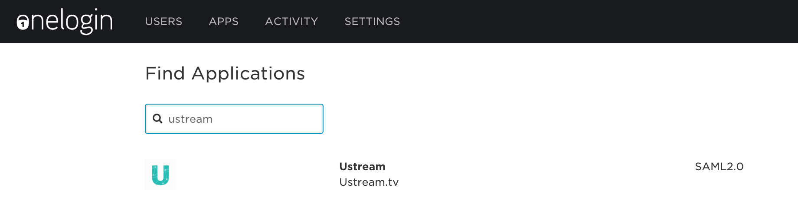

Introduction
This document helps you connecting OneLogin and Ustream Align to have SAML based SSO. It assumes that you already have a OneLogin and Ustream Align account so it doesn't cover the account registrations.
OneLogin Settings
Login to your account at https://www.onelogin.com
Go to Apps > Add Apps
Search for and add the app called Ustream
Add and save the app
Go to the Configuration tab in the app settings and set the following credentials:
Ustream Channel Url
This should be the channel URL where you would like to allow your users to authenticate.
The URL is https://align.ustream.tv/channel/[YOUR CHANNEL NUMBER]

Go to the SSO tab to obtain the values to populate into Ustream’s interface. Do not close this window it will be needed later.

Ustream SAML SSO Settings
Login to your account at https://www.ustream.tv/login
Go to the Account menu on the Ustream dashboard and choose SSO settings from the menu or follow this link: https://www.ustream.tv/dashboard/account/sso-settings
Choose Service Provider Initiated SSO from the two options.
Map the values as follows from the OneLogin SSO settings page:
Name in OneLogin = Name in Ustream
Issuer URL = Entity ID
Certificate = Certificate
To get the Certificate from OneLogin click on Certificate > View Details, copy certificate to get the actual certificate.
SAML 2.0 Endpoint (HTTP) = Login URL
SLO Endpoint (HTTP) = Logout URL (this is optional)